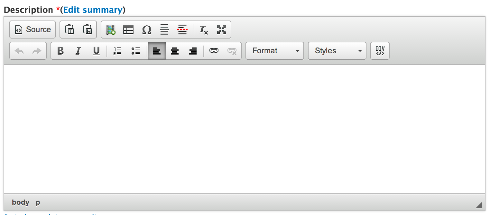
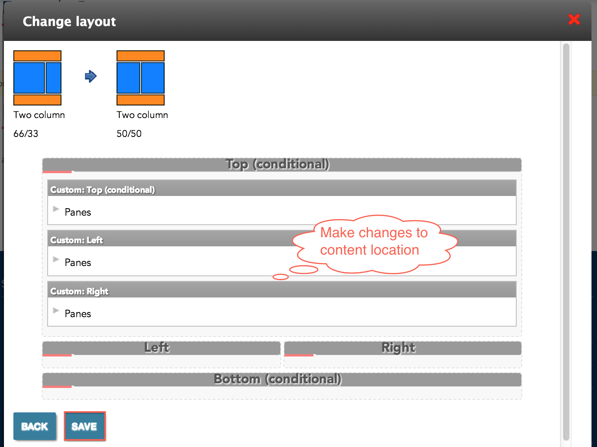

Departments are a content type that represent the departments inside your college.
In the Administration Menu, navigate to:
My Workbench > Create content > Department

Add a new or existing Banner Slide.

Enter the Department Name for this Department.

Enter the Shortened Department Name for this Department.
This short name will be used in the department's url and other areas around the site.
An example of a shortened name for the Department of Biology would be Biology
Enter the Description of this page. This is the main copy of your page.

Using the editor toolbar, you can add images or format your copy.

In this section you can add information for:

Choose a Menu link title which will be the name of the menu item displayed.

More detail on the remaining items in this section can be found in the Menu settings documentation.
While viewing the department, click the New draft tab located at the top of the page.

Updating a department is very similar to Creating a department. Make the changes you want and then click the Save button located at the bottom of the form.

While viewing the department, click the New draft tab located at the top of the page.
At the bottom of the New draft form, click Delete.

Confirm the deletion by clicking the Delete button.

On the department you want to change the layout for, click the Change this layout button located at the bottom of the page.

Select the layout you would like for this department.

Move content around and once you are satisfied, click Save.

On the department you want to customize, click the Customize this page button located at the bottom of the page.

Make the changes that you want.
For a more detailed tutorial, please read Customizing Pages
Once you are satisfied with the changes, click Save.

Created on January 7, 2014
Last modified on January 9, 2014
Authored by Gray Sadler